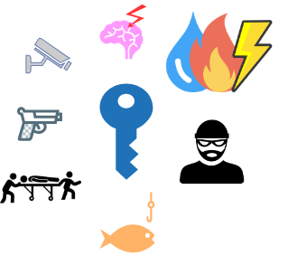
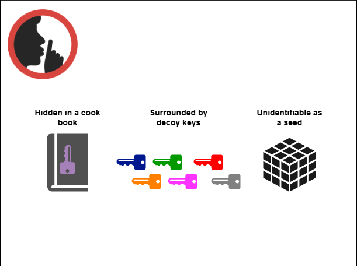

Stage 1.1: Terminology
Stage 1.1.1: Seed Phrase / Private Key
A seed phrase is a list of 12 or 24 words that represents your Bitcoin wallet’s private key.
It gives full access to your funds — anyone with it can spend your Bitcoin.
The phrase allows you to recover your wallet on any device, even if your hardware or
software is
lost.
Protect it carefully and never share it online or with anyone you don’t fully trust.
Stage 1.1.2: Single Signature (Single Sig)
A single-sig wallet is a Bitcoin wallet secured by one private key.
Only the person who controls that key — or its seed phrase — can access and spend the funds.
It’s simple and common for personal wallets but creates a single point of failure.
If the key or seed is lost or stolen, the Bitcoin is permanently gone.
Stage 1.1.3: Attack Vector (AV)
An attack vector is any method or pathway an attacker uses to steal your Bitcoin or the keys
that control it.
Common vectors include phishing links, malware on devices, compromised hardware wallets,
weak backups, and social-engineering scams.
Understanding likely vectors helps you choose defenses like hardware wallets, air-gapped
backups, and strict verification of links and devices.
Stay cautious: reducing exposure to attack vectors is the best way to keep
funds safe.
Stage 1.1.4: Public Key (xPub)
A public key is the cryptographic value derived from your private key that others use to
verify ownership and send Bitcoin.
An xpub (extended public key) can generate all public addresses for a wallet without
exposing the private key, so it's useful for watch-only wallets and address generation.
Although an xpub cannot spend funds, sharing it reveals your full transaction history and
future addresses, reducing privacy.
Use xpubs only for view-only purposes (accounting, backups, or watch-only
wallets) and avoid publishing them if you want to keep activity private.
Stage 1.1.5: Materialized Seed
A materialized seed is a seed phrase that was previously only memorized (immaterial) and has
now been recorded in the physical world — written, engraved on metal, or otherwise stored
offline.
Doing this removes the burden of perfect memory and makes recovery easier, but it creates a
physical attack surface: anyone who finds or copies the materialized seed can spend the
funds.
Treat physical copies like cash:
keep them in secure, redundant locations (e.g., fireproof safe, multiple trusted sites) and
avoid predictable labeling or obvious storage spots.
Stage 1.2: Attack Vector / Threat
Model Assessment
Stage 1.2.1: Threats to an Immaterialized Seed Phrase
The seed or private key is immaterialized if it hasn't been written down.
This means only the holder of the key knows it.
To use it, they have to materialize it at least temporarily during the signing of
transactions via the Seedsigner.
As the Seedsigner is stateless, it will dematerialize the seed / private key as soon
as power is turned off.
Here are the main threat categories to an immaterialzed seed / private Key:
-
Memory Failure: Forgetting the Seedphrase
A very simple way to lose ones Bitcoin is to forget the seedphrase. This can
happen
from
mixing
up
the word order in the mnemonic seed phrase or having misread the seed phrase
in the
first
place.
Cognitive decline is another factor that can contribute to losing vital
information.
While it is possible to avoid the first problem, cognitive decline is not
something
that
can
be
controlled entirely and has to be factored into ones defense system.
Solution:
In most scenarios a seed phrase should be materialized and properly secured
to
prevent
this
threat
from eventually causing loss of funds.
The exceptions are moving funds across a border where it is essential that no
third
parties
that
search the holder might find a materialized seed phrase. Upon completion of
transport
howeverr
the
seed should either be materialized or the funds be sent to a different seed
phrase.
-
Compulsion

Blackmail, extortion and coercion
Coercion — Someone may use physical force, threats, or sustained pressure to
make you
reveal
the
memorized seed or type it into a device; memorized secrets are uniquely
vulnerable
because
you
can
be forced to disclose them on the spot.
Extortion — An attacker might threaten harm to you, your family, or your
property
unless you
hand
over the seed or transfer funds; because the seed is in your head, you can’t
“hide”
it from
a
determined extorter.
Blackmail — An attacker could threaten to expose sensitive personal
information (real
or
fabricated)
unless you reveal the seed or comply with demands; the psychological
pressure can be
enough
to
break
memorized secrecy.
Solutions:
The defense against this category of threats is more complicated and multi
layered
and every
Bitcoiner has to decide for themselves how comprehensive their defensive
strategy
should be.
This is where decoy wallets and not having immediate access to the main chunk
of ones
funds
become
considerations. The Bitcoiner might choose to make themselves unable to
disclose the
seed
phrase
fully under duress by way of not knowing all pieces of information necessary
to do
so.
Basic Operational Security such as not disclosing ones funds, potentially not
disclosing when
Bitcoin
was first bought and how one stores them should be internatlized. Read more
on OPSEC
later
on in
the
guide.
-
Observation
Surveillance during seed input
Hidden cameras, compromised screens, or recording devices can capture your
seed
phrase as you
type or
enter it into a wallet. Even an immaterialized seed becomes exposed the
moment it’s
entered
on a
surveilled device.
Solutions:
Best practice is to never access the seed phrase in a room with cameras and
or
microphones.
There
should be either no windows, or windows with blinds. Best practice is also
to not
have any
individuals in the room that are not seed phrase protectors.
Also make sure not to speak the words of the mnemonic seed phrase while
entering it
into the
Seedsigner or while writing it down.
Best practice is to use the Seedsigner or at least another device which keeps
the
seed phrase
airgapped from the internet.
-
Inaccessibility: Incapacitation or death

This threat will be tackled in detail in the estate planning course in which
the user
will
learn
to
devise a system to get funds to their next of kin or other chosen heirs to
either
have them
manage
the money until death or receive it in case of death.
-
Social Engineering

While other threats might seem more frightening, social engineering is one of
the most
likely causes for loss of funds.
- Pretexting / impersonation — attacker pretends to be a
trusted
person/service to
ask for
the
seed.
- Grooming / rapport-building — slowly gains trust over time
until you
reveal
secrets.
- Elicitation in casual conversation — asking seemingly
innocent questions
that
extract
words,
order, or hints.
- Phishing via accounts/contacts — compromises friends or
services to
trick you
into
revealing
the
seed.
- Authority/urgency pressure — fake emergencies or
official-sounding
demands to
force
disclosure.
- Emotional manipulation — exploiting fear, sympathy,
romance, or guilt to
get you
to hand
it
over.
- Insider betrayal — trusted people (friends, family,
coworkers) who learn
and
later
misuse
the
seed.
- Information piecing — collecting small bits from different
interactions
until
the full
seed
can
be reconstructed.
Solutions:
- Never enter your seed phrase on any internet-connected device.
- Use a hardware wallet so the seed stays isolated and never typed.
- Never share or even mention owning a seed phrase.
- Ignore unsolicited messages, links, or calls about your wallet or
Bitcoin.
- Verify all URLs, updates, and software sources manually.
- Keep wallet recovery and backup procedures completely offline.
- Potentially use multisig setups to prevent a single point of failure or
coercion.
- Store backups securely in multiple, trusted, and private locations.
- Prepare a plan for death or incapacity without exposing the full seed.
- Stay private — don’t show balances or talk about holdings publicly.
Stage 1.2.2: Threats to a Materialized Seed Phrase
Upon permanently materializing the seed in form of a backup, two new threat
categories
are introduced.

Figure 7: materialized seed threat categories
-
Theft
As the seed is stored on a physical item or made somewhat permanent as a
digital
copy, a thief, who either knows of the key or recognizes the key as such
during a
burglary, may steal the funds.
-
Physical Environmental Threats

If there is only one physical copy the key becomes susceptible to destruction
by
environmental hazards such a water, fire or crushing. Corrosion or
electrictiy may
also damage the backup.
Stage 2: The Components of a Defense
This stage will introduce the types of defensive components a bitcoiner can work with. There
are Seed Modifiers, Backup Architecture, Power and Stealth Defense Tools.
Stage 2.1: Seed Modifiers, the Passphrase
There are different seed modifiers available to Bitcoiners. This chapter will focus on the
passphrase.
 icon for a Bitcoin passphrase
icon for a Bitcoin passphrase
If you want to learn about the other modifiers click on the details below.
They are not necessary for this course.
Click to see a list of all Seed Modifiers
1. BIP39 Passphrase (the “25th word”)
A user-defined string added during seed derivation. Creates an entirely new wallet based
on the same 24 words.
- Effect: Same seed + different passphrase = unrelated wallets.
- Use case: Hidden or secondary wallets (plausible deniability).
- Risk: Forgetting it means permanent loss of access.
- Tip: Should be long, memorable, and unique.
2. Derivation Path Variants
Changing the derivation path (e.g., m/44'/0'/0' → m/84'/0'/0')
produces different address types or parallel wallets.
- Effect: Generates new sets of addresses from the same seed.
- Use case: Separate wallets for savings, spending, or inheritance.
- Risk: Must document which paths were used for recovery.
3. Custom Salt / Double-PBKDF2 Layer
Adding an extra private salt to the seed derivation
process, creating a unique seed even if the words are known.
- Effect: Increases cryptographic uniqueness.
- Use case: Advanced users seeking hardware-bound security.
- Risk: Not standardized; recovery tools may not support it.
4. External Encryption Layer
Encrypting the seed or parts of it using a separate key or password (e.g., AES
encryption).
- Effect: Protects seed if found in digital or physical form.
- Use case: Suitable for environments where physical security is
uncertain.
- Risk: Incompatible with air-gapped recovery unless documented.
5. Encoding or Transformation Schemes
Obscuring the seed or passphrase using book codes, patterns, or numeric encoding.
- Effect: Makes the backup look meaningless without knowing the key.
- Use case: Stealth defense and low recognizability.
- Risk: Decoding rules must be preserved securely.
6. Wallet-Specific Modifiers
Advanced options like BIP85 child seeds, Miniscript parameters, or inheritance
conditions.
- Effect: Enables hierarchical or time-based wallet logic.
- Use case: Long-term setups, company or family systems.
- Risk: Requires wallet-specific understanding and documentation.
Summary
The BIP39 passphrase is the only widely supported and standardized seed modifier. Others
offer more secrecy but trade off portability and simplicity, and are best for advanced
users.
A passphrase is a seed modifier because it is an additional input that
changes the cryptographic result
of your seed phrase words without altering those words themselves.
The seed phrase alone generates a master seed, which is the root for all private
keys and addresses. When you add a passphrase, it’s combined with the seed through the BIP39
PBKDF2 process to create a completely different master seed.
This allows us to effectively create a hidden wallet behind the initial seed phrase.
Key Points
- Same recovery words + different passphrase = different wallet.
- A missing or incorrect passphrase means the wallet cannot be recovered.
- The passphrase is never stored by the wallet software.
Figure 1: Seed Modifier Passphrase Diagram
Stage 2.2: Backup Architecture / Redundancy & Distribution
While Seed Modifiers change the seed itself,
Redundancy & Distribution change the architecture of the defense model.
This happens because the number of instances of the key is increased through copies
(redundancy).
Sensible distribution places the copies in different locations (distribution) to avoid loss
of funds in case of the destruction of one site and/or copy.
 Figure 2: Redundancy and Distribution Diagram
Figure 2: Redundancy and Distribution Diagram
Stage 2.2.1: Redundancy
Redundancy means creating multiple copies of critical data or systems to ensure availability
and durability in case of loss or failure.
What it does
It provides backup layers so that if one copy is lost, damaged, or inaccessible, another can
take its place without data loss.
Advantages
- Increases reliability and fault tolerance.
- Protects against accidental deletion or hardware failure.
- Improves long-term data durability.
Disadvantages
- Requires more storage space and maintenance.
- Can increase complexity and potential exposure if copies are not well secured.
- Higher cost for storage and management.
Stage 2.2.2: Distribution
Distribution means spreading your backup copies across multiple locations
or entities.
It focuses on separation and independence to eliminate as many single points of failures
(SPOF) as possible.
This defensive system will focus on geographical dispersion.
The user must decide the desired scope of separation — ranging from the same house, to the
neighbourhood, city, region, country, or even continent and potentially space.
In regions prone to natural disasters, it is advised to place backups far enough apart that
the destruction of both locations becomes highly unlikely.
Advantages
- Reduces single-point-of-failure risk.
- Improves resilience to physical disasters or theft.
- Can combine with redundancy for strong, layered security.
Disadvantages
- Increases logistical complexity and coordination.
- Harder to retrieve all pieces quickly when needed.
- Requires careful record-keeping to avoid losing track of locations or shares.
Stage 2.3: The defensive tools
Defensive tools are measures that strengthen the backup's resistance to loss, theft, or
damage without altering the seed, its quantity, or its storage locations.
Stage 2.3.1: Power Defense
Stage 2.3.1.1: The power defense tools
Power defense tools are physical or mechanical measures designed to make accessing a
backup or seed significantly more difficult for attackers.
They provide strong protection against theft, destruction, or tampering.
 Figure 3: Defensive Power Tools
Figure 3: Defensive Power Tools
-
Reinforced Backup Media:
Hardened metal plates (stainless steel, titanium, Inconel) protect the
engraved seed against fire, water, and physical damage.
-
Secure Storage Units:
Fireproof, water-resistant safes or vaults — ideally reinforced steel or
deposit boxes that require significant time, tools, or authorization to
access.
-
Access Control & Detection:
Physical locks, security cages, guards, alarm systems, and surveillance
restrict access and deter tampering.
Advantages
- protect against theft or destruction
- deters attackers as it increases time and effort to breach
Disadvantages
- cost increases as more physical defenses are added
- without stealth, visible defenses signal a valuable target
Stage 2.3.1.2: Backup Materials
and their properties
In this stage you will take a look at possible materials that can be used to store
your
seedphrase
with.
The following list will give you the concentrated choice of only the best possible
materials
ignoring
things such as paper and other very weak materials.
If you want to look at a comprehensive ranked list of materials with their
respective
properties, including water and heat resistance as well as hardness
Click here
BTC Seed Storage Materials
| Rank |
Material |
Durability |
Pros |
Cons |
Typical Use / Cost |
| 1 |
Paper |
Very poor / poor / poor / poor |
Cheap, easy to write |
Burns, soaks, tears, ages, easy to copy |
Home print — very low cost |
| 2 |
Cardboard / index card |
Very poor / poor / poor / poor |
Slightly stiffer than paper |
Same vulnerabilities as paper, bulky |
Low cost |
| 3 |
Photographic print / photos |
Poor / poor / poor / poor |
Easy to store in wallets/envelopes |
Fades, water damage, fire |
Low cost |
| 4 |
Plastic-laminated paper |
Poor / fair / fair / poor |
Prevents smudging, water-resistant short term |
Melts in fire, lamination can delaminate, not archival |
Low cost |
| 5 |
Wood (engraved or burned) |
Poor / fair / poor / fair |
Rustic, engraves easily |
Burns, rot, insects, swells with water |
Low–moderate |
| 6 |
Thin aluminium foil / sheet |
Poor / good / fair / poor |
Cheap, resists water & some corrosion |
Easy to cut/tear, low crush resistance, melts at high temp |
Low cost |
| 7 |
Copper / Brass sheet (soft metal) |
Fair / good / fair / fair |
Corrosion resistant, engraves easily |
Relatively soft (can bend), corrodes in some environments |
Low–moderate |
| 8 |
Thick aluminium plate |
Fair / good / fair / good |
Lightweight, resists water, better heat tolerance |
Lower melting point than steel, can deform in intense fire |
Moderate |
| 9 |
Thin stainless steel |
Good / excellent / very good / good |
Sturdy, resists rust, widely used |
Softer than hardened steels, can warp in extreme heat |
Moderate |
| 10 |
Commercial stainless-steel crypto-plate |
Good / excellent / very good / very good |
Designed for seeds, durable, tamper-evident |
Needs stamping/engraving tool; moderate cost |
Moderate–high |
| 11 |
Pure nickel sheet |
Very good / excellent / excellent / very good |
High temperature tolerance, corrosion-resistant |
Softer than some alloys, more expensive than stainless |
Moderate–high |
| 12 |
Inconel / nickel-chromium alloy |
Excellent / excellent / excellent / excellent |
Exceptional high-temp resistance |
Expensive, harder to engrave |
High cost |
| 13 |
Titanium plate |
Excellent / excellent / excellent / excellent |
Very strong, corrosion-proof, high melting point, low weight |
Expensive, specialized engraving needed |
High cost |
| 14 |
Hardened/tool steel plate |
Excellent / excellent / very good / excellent |
Extremely strong, high crush and heat resistance |
Can corrode if not stainless; heavy |
High cost |
| 15 |
Ceramic / granite stone |
Excellent / excellent / excellent / good (brittle) |
Survives very high heat, chemically inert |
Brittle, bulky, engraving can be shallow |
Moderate–high |
The material which this guide will suggest is stainless steel for its durability and
cost
efficiency.
Any higher grade, more resistant but also more expensive material is usable if the
individual so
chooses.
Stage 2.3.2: Stealth Defense
Stealth tools are methods and objects designed to make the target seed harder to
identify and
find. They rely on disguise, misdirection, and minimal exposure so an attacker
overlooks the real material.
- Stealth Storage: Seed written or engraved inside an everyday object (book, diary,
behind a painting, inside a household item).
- False labeling: Making the storage look unimportant or misleading (e.g., labeled “old
notes”, “warranty”, or “receipts”).
- Decoy wallets: Fake wallets or seed phrases that mislead thieves while the real funds
are protected elsewhere.
- Key Disguise via Encryption: Seed hidden inside a file, picture, or container using strong
encryption; appears as harmless data until decrypted.
- Secrecy: Minimize verbal and written references; avoid telling unnecessary
people and never annotate obvious hints.

Figure 4: Defensive Stealth Tools
Advantages
- Reduces the chance an attacker recognizes the item as valuable.
- Low cost and often easy to implement.
- Works well combined with redundancy and distribution for layered defense.
Disadvantages
- Relies on secrecy—if the scheme is discovered, protection fails.
- Can be accidentally discarded or lost if the disguise is too convincing.
- May create operational friction (remembering the disguise, verifying authenticity
without exposing the secret).
Implementation tips
- Keep meanings and locations documented securely (encrypted note or memorized mnemonic)
to avoid forgetting.
- Mix stealth with other defenses: combine decoys, physical security, and distribution.
- Avoid obvious crypto-related imagery or labels that attract attention.
- Use innocuous, varied disguises and rotate them over time to reduce pattern risk.
- Test durability and recoverability (e.g., check that writing/engraving survives expected
conditions) without exposing the secret.
Stage 2.4: OPSEC - Operational Security
OPSEC — Mission
Protect the confidentiality, integrity, and availability of cold-storage backups by enforcing
simple, repeatable handling rules that prevent social engineering, theft, and accidental
loss.
Core Assumptions (Checklist)
- Seed never typed, photographed, scanned, or read aloud.
- Seed never touches an internet-connected device.
- Backup locations, architecture, and amounts are not discussed with outsiders.
- Passphrase is stored separately or memorized; not kept with seed copies.
- All requests concerning seed/passphrase/backups are treated as hostile unless
pre-authorized through an out-of-band code.
Rules of Handling
- Always use an air-gapped, camera-free environment when creating or restoring backups.
- Never enter seed or passphrase into a networked device; use hardware wallets or verified
offline tools only.
- Label physical backups innocuously; avoid obvious “seed” markers.
- Duplicate only what is necessary and distribute copies according to the chosen
architecture.
- Keep documentation minimal and encrypted; do not store both recovery instructions and
keys together.
Communication Protocol
- Agree an out-of-band verification method (code phrase, physical token) with any trusted
contact or heir.
- Handle all operational requests in person or via pre-agreed secure channels; no ad-hoc
messages accepted.
- If contacted about the backup, do not disclose anything; escalate to verification steps
first.
Insider & Coercion Defenses
- Compartmentalize: avoid any single person knowing all components (locations +
passphrase).
- Use decoy wallets and plausible deniability where appropriate and tested in advance.
- Train trusted parties on the protocol: how to verify and what to never ask for.
Testing & Maintenance Cadence
- Verify restores on an air-gapped device at least annually (test one path, not all at
once).
- Rotate storage locations or refresh materials every 3–5 years or after major life
events.
- Log tests and changes in an encrypted record stored separately from the backups.
Emergency Flows (Immediate Steps)
- If a backup location is compromised: assume compromise, move remaining pieces, and
consider creating a new seed+passphrase pair.
- If coerced or legally compelled: obey safety-first rules (e.g., produce decoy if
planned), then rotate funds to a new wallet when safe.
- If unsure about a request: stop, verify out-of-band, do not act under pressure.
Inheritance Note
- Provide heirs with a minimal, encrypted instruction set outlining the recovery process
and verification method — do not include seeds or passphrases in the same place.
- Use legal mechanisms (will, trust, executor) to control timing and conditions for
revealing recovery details.